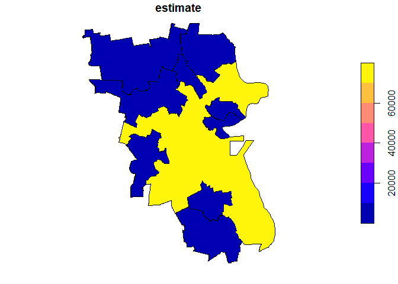

The American Community Survey (ACS) offers geodatabases with geographic information and associated data of interest to researchers in the area. The goal of geogenr is to generate geomultistar objects from those geodatabases automatically, once the focus of attention is selected.
Installation
You can install the released version of geogenr from CRAN with:
install.packages("geogenr")And the development version from GitHub with:
# install.packages("devtools")
devtools::install_github("josesamos/geogenr")Example
Each ACS geodatabase is structured in layers: a geographic layer, a metadata layer, and the rest are data layers. The data layers have a matrix form, the rows are indexed by instances of the geographic layer, the columns by variables defined in the metadata layer, the cells are numeric values. Here we have an example:
GEOID B01001e1 B01001m1 B01001e2 B01001m2 B01001e3 B01001m3 B01001e4 B01001m4 ...
16000US0100100 218 165 92 114 10 16 18 30
16000US0100124 2582 24 1313 98 45 37 14 19
16000US0100460 4374 24 1963 158 144 76 105 68
16000US0100484 641 159 326 89 10 17 16 11
16000US0100676 295 102 143 55 7 11 14 17
16000US0100820 32878 57 16236 453 1159 257 1151 209
...
Some of the defined variables are shown below.
Short Name Full Name
B01001e1 SEX BY AGE: Total: Total Population -- (Estimate)
B01001m1 SEX BY AGE: Total: Total Population -- (Margin of Error)
B01001e2 SEX BY AGE: Male: Total Population -- (Estimate)
B01001m2 SEX BY AGE: Male: Total Population -- (Margin of Error)
B01001e3 SEX BY AGE: Male: Under 5 years: Total Population -- (Estimate)
B01001m3 SEX BY AGE: Male: Under 5 years: Total Population -- (Margin of Error)
B01001e4 SEX BY AGE: Male: 5 to 9 years: Total Population -- (Estimate)
B01001m4 SEX BY AGE: Male: 5 to 9 years: Total Population -- (Margin of Error)
...
First, we select and download the ACS geodatabases using the functions offered by the package. Once we have them in a folder (in this case some examples are included in the package), this is a basic example which shows you how to solve a common problem:
library(geogenr)
folder <- system.file("extdata", package = "geogenr")
folder <- stringr::str_replace_all(paste(folder, "/", ""), " ", "")
ua <- uscb_acs_5ye(folder = folder)
(sa <- ua |> get_statistical_areas())
#> [1] "Combined New England City and Town Area"
#> [2] "Combined Statistical Area"
#> [3] "Metropolitan Division"
#> [4] "Metropolitan/Micropolitan Statistical Area"
#> [5] "New England City and Town Area"
#> [6] "New England City and Town Area Division"
#> [7] "Public Use Microdata Area"
#> [8] "Tribal Block Group"
#> [9] "Tribal Census Tract"
#> [10] "Urban Area"
(y <- ua |> get_available_years_downloaded(geodatabase = sa[6]))
#> [1] 2014 2015
ul <- uscb_layer(uscb_acs_metadata, ua = ua, geodatabase = sa[6], year = 2015)
(layers <- ul |> get_layer_names())
#> [1] "X00_COUNTS" "X01_AGE_AND_SEX" "X02_RACE"
ul <- ul |> get_layer(layers[2])
(layer_groups <- ul |> get_layer_group_names())
#> [1] "001 - SEX BY AGE" "002 - MEDIAN AGE BY SEX"
#> [3] "003 - TOTAL POPULATION"
ul <- ul |> get_layer_group(layer_groups[1])
gms <- ul |> get_geomultistar()
#> Warning in CPL_read_ogr(dsn, layer, query, as.character(options), quiet, : GDAL
#> Message 6: driver OpenFileGDB does not support open option METHODFor a folder, we get the years for which we have one area geodatabases downloaded. We select the geodatabase for a specific year (uscb_layer). From among the layers and groups of variables available, we select a layer (get_layer) and one of its groups (get_layer_group). From the selected variables we generate a geomultistar object (get_geomultistar).
The first rows of the dimension and fact tables are shown below.
| when_key | year |
|---|---|
| 1 | 2015 |
| where_key | cnectafp | nectafp | nctadvfp | geoid | name | namelsad | lsad | mtfcc | aland | awater | intptlat | intptlon | shape_length | shape_area | geoid_data |
|---|---|---|---|---|---|---|---|---|---|---|---|---|---|---|---|
| 1 | 715 | 71650 | 71654 | 7165071654 | Boston-Cambridge-Newton, MA | Boston-Cambridge-Newton, MA NECTA Division | M7 | G3220 | 3.668e+09 | 7.13e+08 | +42.2933266 | -071.0181929 | 7.653 | 0.4783 | 35500US7165071654 |
| 2 | 715 | 71650 | 72104 | 7165072104 | Brockton-Bridgewater-Easton, MA | Brockton-Bridgewater-Easton, MA NECTA Division | M7 | G3220 | 352799175 | 8831197 | +42.0216172 | -071.0267170 | 1.077 | 0.03932 | 35500US7165072104 |
| 3 | 715 | 71650 | 73104 | 7165073104 | Framingham, MA | Framingham, MA NECTA Division | M7 | G3220 | 532516314 | 24039093 | +42.2761738 | -071.4822008 | 1.738 | 0.06073 | 35500US7165073104 |
| 4 | 715 | 71650 | 73604 | 7165073604 | Haverhill-Newburyport-Amesbury Town, MA-NH | Haverhill-Newburyport-Amesbury Town, MA-NH NECTA Division | M7 | G3220 | 702086333 | 40447613 | +42.8671722 | -071.0254982 | 1.416 | 0.08179 | 35500US7165073604 |
| 5 | 715 | 71650 | 74204 | 7165074204 | Lawrence-Methuen Town-Salem, MA-NH | Lawrence-Methuen Town-Salem, MA-NH NECTA Division | M7 | G3220 | 207735751 | 9917120 | +42.7282758 | -071.1630701 | 0.9094 | 0.02392 | 35500US7165074204 |
| 6 | 715 | 71650 | 74804 | 7165074804 | Lowell-Billerica-Chelmsford, MA-NH | Lowell-Billerica-Chelmsford, MA-NH NECTA Division | M7 | G3220 | 863143106 | 27403003 | +42.6141693 | -071.4837821 | 2.441 | 0.09771 | 35500US7165074804 |
| what_key | short_name | full_name | inf_code | group_code | subgroup_code | spec_code | inf | group | subgroup | demographic_age | demographic_sex | demographic_race | demographic_total_population | demographic_total_population_spec |
|---|---|---|---|---|---|---|---|---|---|---|---|---|---|---|
| 1 | B01001A_01 | SEX BY AGE (WHITE ALONE): Total: People Who Are White Alone | B01 | 001 | A | 1 | AGE AND SEX | SEX BY AGE | WHITE ALONE | People Who Are White Alone | Total | |||
| 2 | B01001A_02 | SEX BY AGE (WHITE ALONE): Male: People Who Are White Alone | B01 | 001 | A | 2 | AGE AND SEX | SEX BY AGE | WHITE ALONE | Male | People Who Are White Alone | |||
| 3 | B01001A_03 | SEX BY AGE (WHITE ALONE): Male: Under 5 years: People Who Are White Alone | B01 | 001 | A | 3 | AGE AND SEX | SEX BY AGE | WHITE ALONE | Under 5 years | Male | People Who Are White Alone | ||
| 4 | B01001A_04 | SEX BY AGE (WHITE ALONE): Male: 5 to 9 years: People Who Are White Alone | B01 | 001 | A | 4 | AGE AND SEX | SEX BY AGE | WHITE ALONE | 5 to 9 years | Male | People Who Are White Alone | ||
| 5 | B01001A_05 | SEX BY AGE (WHITE ALONE): Male: 10 to 14 years: People Who Are White Alone | B01 | 001 | A | 5 | AGE AND SEX | SEX BY AGE | WHITE ALONE | 10 to 14 years | Male | People Who Are White Alone | ||
| 6 | B01001A_06 | SEX BY AGE (WHITE ALONE): Male: 15 to 17 years: People Who Are White Alone | B01 | 001 | A | 6 | AGE AND SEX | SEX BY AGE | WHITE ALONE | 15 to 17 years | Male | People Who Are White Alone |
| when_key | where_key | what_key | estimate | margin_of_error | nrow_agg |
|---|---|---|---|---|---|
| 1 | 1 | 1 | 2134196 | 4429 | 1 |
| 1 | 1 | 2 | 1033634 | 3014 | 1 |
| 1 | 1 | 3 | 51671 | 1007 | 1 |
| 1 | 1 | 4 | 54932 | 1209 | 1 |
| 1 | 1 | 5 | 57585 | 1243 | 1 |
| 1 | 1 | 6 | 36139 | 771 | 1 |
Once we have a geomultistar object, we can use the functionality of starschemar and geomultistar packages to define multidimensional queries with geographic information.
library(starschemar)
library(geomultistar)
gms <- gms |>
define_geoattribute(
attribute = c("name"),
from_attribute = "geoid"
)
gdqr <- dimensional_query(gms) |>
select_dimension(name = "where",
attributes = c("name")) |>
select_dimension(
name = "what",
attributes = c("short_name")
) |>
select_fact(name = "sex_by_age",
measures = c("estimate")) |>
filter_dimension(name = "when", year == "2015") |>
filter_dimension(name = "what",
demographic_age == "Under 5 years") |>
run_geoquery()The result is a vector layer that we can save, perform spatial analysis or queries on it, or we can see it as a map, using the functions associated with the sf class.
plot(gdqr[,"estimate"])
Once we have verified that the data for the reference year is what we need, we can expand our database considering the rest of the years available in the folder. The only requirement to consider a year is that its variable structure be the same as that of the reference year.
uf <- uscb_folder(ul)
cgms <- uf |> get_common_geomultistar()
#> Warning in CPL_read_ogr(dsn, layer, query, as.character(options), quiet, : GDAL
#> Message 6: driver OpenFileGDB does not support open option METHODInstead of displaying all the tables, we focus on the table in the when dimension.
| when_key | year |
|---|---|
| 1 | 2014 |
| 2 | 2015 |
Includes data for all available years.